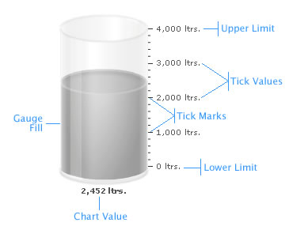

Cylinder Gauge > Elements of the gauge |
A cylinder gauge chart consists of the following elements:
Here we’ll see each of them in detail. Let’s first have a look at a standard cylinder chart enlisting the various basic components: |
|  |
| Cylinder Fill The cylinder is the main component in a cylinder chart – the percentage of cylinder filled helps the end user to decipher the value being illustrated. Tick Marks
Chart value Annotations Now that we are aware of the basic components that make up a cylinder gauge, lets go ahead to build a sample cylinder gauge. |